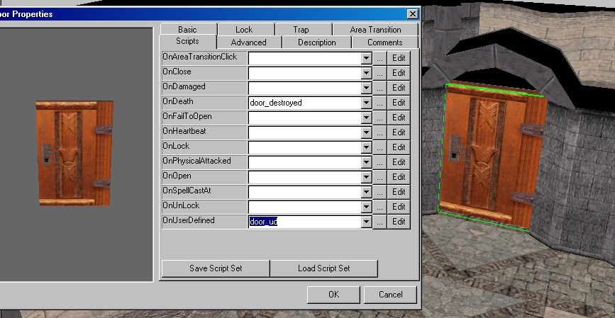

:: Module Building :: Respawning Doors ::
There is a very simple respawning door system included in PRC v3.1 or higher. It consists of two scripts,
door_destroyed and door_ud. Simply put the door_ud script in a doors OnUserDefinedEvents script
slot, and put door_destroyed in OnDeath slot. See the picture below as an example

If you want the door to respawn after a certain time, enter the number of minutes into the
will save throw. Then once that time has elapsed, the door will respawn.
If you want to manually controll the door respawning, leave the will saving throw at zero.
Then when you want the door to respawn, use the SignalEvent command to send a User Defined event
number 500 to the door. You may want to refer to the lexicon for information about these commands.
Note: if the door is trapped and or locked the trap/lock will not respawn with the door.
You can use the CreateTrapOnObject() function to add a trap, and SetLocked() to lock the door.